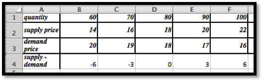
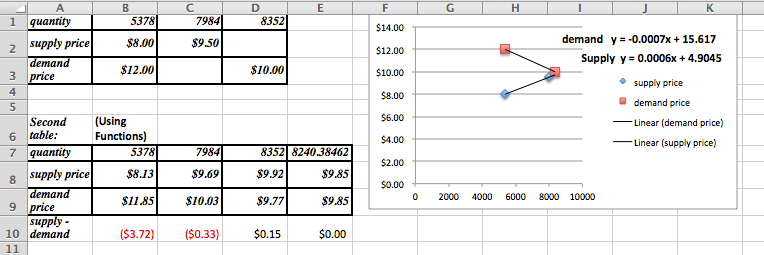

Section 2.1 Market Equilibrium Problems
¶Link to worksheets used in this section
As we mentioned in the previous chapter, many functions are locally linear, so if we restrict the domain the function will appear linear. Thus we often start with linear models when trying to understand a situation. In this section we look at the concepts of supply and demand and market equilibrium. For our examples in this section we will assume that the functions are linear in the range we care about.
Supply and Demand and Market Equilibrium
The normal laws of supply and demand assume we are in a market with many producers and consumers, operating independently, all of them looking out for their own best interests. We expect that when the price goes up, more producers are willing to sell but fewer consumers are willing to buy. Conversely, when the price goes down, fewer producers are willing to sell but more consumers are willing to buy.
Consider the example of gasoline prices. Different prices will make some areas of exploration and production profitable or not profitable. When prices go up, new wells get drilled. If prices go down too far, stripper wells cease being profitable and are shut down. From the consumer side, when prices go up, more people look at mass transit or getting a more fuel-efficient vehicle. When prices go down, it is easier to think about a road trip.
The law of supply looks at the economy from the supplier’s point of view. Price and quantity available for sale always move in the same direction. If the price goes up we can assume that all the old suppliers are still willing to sell at the higher price, but some more suppliers may enter the market. If the price goes down, no new suppliers will enter the market, and some old suppliers may leave the market. For a linear model
The law of demand looks at the economy from the consumer’s point of view. Price and quantity available for sale always move in the opposite direction. If the price goes down we can assume that all the old consumers are still willing to buy at the lower price, but some more consumers may leave the market. If the price goes up, no new consumers will enter the market, and some old consumers may leave the market. For a linear model
When we look at a graph of the supply price graph and the demand price graph on the same graph, we know the supply curve goes up as we go left to right, while the demand curve goes down. From the properties of lines we know there is a single point where such a pair of lines can intersect. It is at the point where the amount of goods offered for a price equals the amount of goods desired for the same price.
This intersection of the supply and the demand functions is called the point of market equilibrium, or equilibrium point.
The price at this point is referred to as the equilibrium price`.
The standard economic theory says that a free and open market will naturally settle on the equilibrium price.

Example 2.1.1. Starting With Formulas.
Suppose \(q\) denotes quantity, and the supply price for widgets is given by
We are also told the demand price is given by
Find the equilibrium price and quantity.
Solution a: We have started with an example that we can do by basic algebra without any technology. Subtracting the two equations, we see that
Some straightforward algebra shows that the equilibrium quantity is 400. Substituting back into either equation gives an equilibrium price of $10.
Solution b: While we can do this example by hand, we also want to use it to set up a solution with Excel, since we may want help on problems where the numbers are not as nice. Our plan is to use Goal Seek to find the intersection. We need a cell where we can solve the problem by forcing the cell to have a value of zero.

When cell D2 is zero, the supply price will be the same as the demand price. We now invoke Goal Seek.

As expected, it finds equilibrium when \(q=400\text{.}\)
We need to do a bit more work when we are simply given data points and need to find the supply and demand curves.
Example 2.1.2. Starting With Data.
My market data indicates customers will buy 700 gizmos if they are priced at $13 each. If the price rises to $15, they will only buy 500. If the price is $12 a unit, the producers will make 400 gizmos. If the price rises to $13, they will produce 600 gizmos. Assume that the supply and demand curves are linear for between 300 and 1000 gizmos. Find the equilibrium point for the gizmo market.
Solution: We start by making a chart for the values given. We add a scatterplot so that we can see the values.

Next we add linear trendlines for both the supply and demand. We select the option to show the equations.

The projected equations are:
We set up columns for the projected supply and demand curves. We also add a column for the difference so that we can use Goal seek to find the equilibrium point.

There is one more detail worth noting from this last example. Depending on the units used, the slope can be very close to zero. If we are selling tens of millions of units for a price under a dollar, the change in price of a penny may correspond to a change in quantity of several thousand. Make sure to include enough digits for your equation to be meaningful.
Example 2.1.3. Computing Sales.
We have obtained the following data for sales of gizmos in our location.
| quantity | 653 | 762 | 847 | 943 | 1050 | 1130 | 1260 |
| Supply price | 5.52 | 6.20 | 6.85 | 7.48 | |||
| Demand price | 6.68 | 6.50 | 6.38 | 6.31 |
Assume the supply and demand curves are linear for quantities between 600 and 1300. Find the best fitting lines for the supply and demand functions. Find the equilibrium point. Make a chart listing how many we can sell for $6.40 and $6.60. Remember that sales will be the minimum of the supply and the demand.
Solution: We start by putting the data into a spreadsheet and finding the best fitting lines. We select the option to show the equations in the chart.

The supply and demand functions are:
We add columns for the projected supply and demand prices, using the equations obtained from the best fitting lines. We also add a column, and compute the difference of the supply and demand functions. We can now use goal seek to solve the problem.

We now use Goal Seek to find the equilibrium point.

At equilibrium we sell 956 gizmos at $6.50. To find sales at $6.40 and $6.60, we use Goal Seek to get those values at both supply and demand prices.

We see that we can sell 1055 gizmos at $6.40, but can only obtain 925. Thus our sales at $6.40 will be 925. At $6.60 we can obtain 987 gizmos, but can only sell 855. Thus our sales at $6.60 will be 855. We can eliminate a step in this process if we recall that below equilibrium price the constraint is supply, while above equilibrium price the constraint will be demand.
Exercises 2.1.1 Exercises 2.1 Equilibrium Problems
¶For problems 1-4, given the equations of the supply and demand curves:
Evaluate the curves at \(q_0\text{.}\)
Find the market equilibrium.
1.
Given \(supply\ price=3 quantity+10\) and \(demand\ price=-2 quantity+30\text{,}\) with \(q_0=6\text{.}\)

Entries in the cells before quick fill
From the table we see that at \(q_0=6\) the supply price is $28 and the demand price is $18.
Table with quantities ranging from 0 to 10
-
The market equilibrium happened to show up without requiring any more work. The equilibrium occurs when \(q = 4\) and the price is $22.
If we had not seen the equilibrium in the table, we should graph the table and determine what values of \(q\) we should look at. After adjusting the table we can use Goal Seek to find the equilibrium point: Solve\(supply-demand=0.\)
2.
Given \(p_s=2 q+20\) and \(p_d=- q+200\text{,}\) with \(q_0=40\text{.}\)
3.
Given \(supply\ price=.2 q+157.3\) and \(demand\ price=-0.01 q+3468.9\text{,}\) with \(q_0=6000\text{.}\)
The initial entries:
Initial attempt at the data includes the quantity 6000 (to answer part a) When \(q = 6000\) we have that the supply price is $1357.30 and the demand price is $3408.90
When \(q = 6000\) we have that the supply price is $1357.30 and the demand price is $3408.90
-
The market equilibrium is outside the range that we tested. The graph indicates that the equilibrium (the intersection point) is to the right of the values we checked. Let’s redo the table with \(q\) between 0 and 20,000. The increments are a matter of preference. In this example we will use steps of 4000. The graph shows that the intersection point is somewhere between \(q = 12,000\) and \(16,000\text{.}\) The table shows it’s close to \(q = 16,000\text{.}\)

We use Goal Seek to determine the actual equilibrium point.

Goal Seek shows that the equilibrium point is at \(q = 15770\) with a price of $3311.20
4.
Given \(p_s=0.0035 q+23\) and \(p_d=-0.0027 q+463\text{,}\) with \(q_0=46,798\text{.}\)
5.
I am given \(p=-2 q+100\) and \(p=3 q-30\text{,}\) as my supply and demand curves, but am not told which is which. Determine which curve is the supply curve and explain how you did it. What limits can you put on the domain of the supply and demand functions?
The supply function is always increasing (positive slope) and the demand function is always decreasing (negative slope), so we have:
We expect both functions to be positive, because negative prices would indicate we would have to actually give people money to take our product off our hands!
So we should only consider quantities between 10 and 50.
For problems 6-9, given the supply and demand data:
Find equations of the supply and demand curves, assuming they are both linear.
Find the market equilibrium.
6.
Given
| quantity | 50 | 100 |
| Supply price | 4 | 10 |
| Demand price | 9 | 5 |
7.
Given
| quantity | 60 | 70 | 90 | 100 |
| Supply price | 14 | 20 | ||
| Demand price | 19 | 16 |
-
We start by using trendlines to find the linear model functions.
Once we have the function we create a second table using the functions instead of the initial data. The equations were edited to indicate which one is the supply and which one is the demand function.

The second table will be set up to give us the supply, demand and the supply – demand so we can use Goal Seek to find the market equilibrium.
The market equilibrium occurs at \(q = 80\) with a price of $18. (No Goal Seek required in this case.)
8.
Given
| quantity | 4356 | 4792 | 6503 | 7038 |
| Supply price | $1.00 | $1.15 | ||
| Demand price | $1.10 | $.98 |
9.
Given
| quantity | 5378 | 7984 | 8352 |
| Supply price | $8.00 | $9.50 | |
| Demand price | $12.00 | $10.00 |
-

The supply and demand functions are:
\begin{equation*} supply\ price (q)= 0.0006 q+4.9045 \end{equation*}\begin{equation*} demand\ price (q)= -0.0007 q+15.017 \end{equation*}These decimal approximations introduce a bit of an error: note the difference between the recorded prices and the ones predicted by the model.
To find the market equilibrium the column for q = 8352 was copied and used to find the equilibrium point. Note that Goal Seek only works if the entries in the cells are formulas! The equilibrium is at q = 8240, with a price of $9.85.
-
The projected prices are:
Supply price of $9.92 when \(q = 8352\)
Demand price of $10.03 when \(q = 7984\)
For problems 10-12, given the supply and demand data:
Find equations of the supply and demand curves, assuming they are both linear.
Find the market equilibrium.
Find the projected supply and demand prices for the extra quantities given.
10.
Given
| quantity | 100 | 120 | 140 | 160 | 180 | 155 |
| Supply price | 10.5 | 11.8 | 13.9 | 16.3 | 17.5 | |
| Demand price | 21.3 | 18.1 | 14.7 | 12.3 | 8.6 |
11.
Given
| quantity | 5021 | 6051 | 6968 | 7901 | 9023 | 9917 | 7500 |
| Supply price | 13.18 | 16.76 | 17.89 | 19.32 | |||
| Demand price | 19.69 | 18.78 | 18.05 | 17.61 |
-
For this problem the trendlines are truly models and will find the best fit curve.

To be able to use Goal Seek we do need a table generated by formulas, so we use the trendline equations:
\begin{equation*} supply\ price=0.0012 x+7.773 \end{equation*}\begin{equation*} demand\ price= -0.0005 x+22.506 \end{equation*}
The market equilibrium takes place at \(q = 8666.5\) with a price of $ 18.17
-
The projected prices are

12.
Given
| quantity | 3160 | 3615 | 4092 | 4462 | 4837 | 5261 | 5579 | 6000 |
| Supply price | 20.54 | 20.70 | 22.37 | 22.43 | ||||
| Demand price | 25.31 | 18.91 | 17.04 | 14.37 |